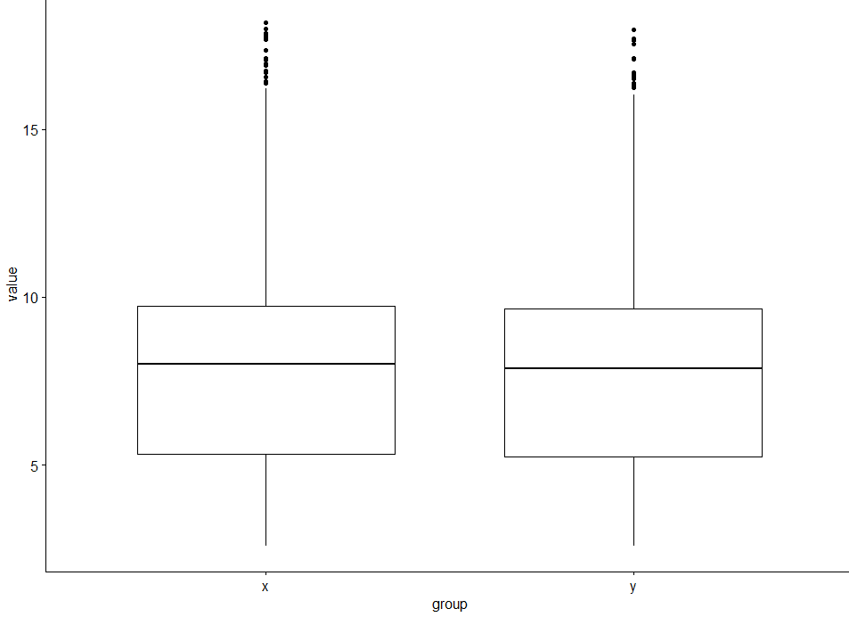

憨憨地承认这篇文章大量引用jimmy老师博客
基础概念 需要掌握R内置数据集及R包数据集
理解 定性变量（qualitative variable） 和 定量变量(quantitative variable)
定量数据的集中趋势 指标主要是：众数、分位数和平均数
定量数据的离散趋势 指标主要是：极差，方差和标准差，标准分数，相对离散系数（变异系数），偏态系数与峰态系数
Q1: 载入R中自带的数据集 iris，指出其每列是定性还是定量数据
第1-4列为定量数据，第5列为定性数据
1 2 3 4 5 6 'data.frame': 150 obs. of 5 variables: $ Sepal.Length: num 5.1 4.9 4.7 4.6 5 5.4 4.6 5 4.4 4.9 ... $ Sepal.Width : num 3.5 3 3.2 3.1 3.6 3.9 3.4 3.4 2.9 3.1 ... $ Petal.Length: num 1.4 1.4 1.3 1.5 1.4 1.7 1.4 1.5 1.4 1.5 ... $ Petal.Width : num 0.2 0.2 0.2 0.2 0.2 0.4 0.3 0.2 0.2 0.1 ... $ Species : Factor w/ 3 levels "setosa","versicolor",..: 1 1 1 1 1 1 1 1 1 1 ...
Q2: 对数据集 iris的所有定量数据列计算集中趋势指标：众数、分位数和平均数
1 2 3 4 5 6 7 data=iris[,1:4] # 众数 for (j in 1:4){ coldata<-table(data[,j]) a=which(coldata==max(coldata))# 所有众数 print(paste("the mode is",names(a))) }
第三列有两个众数
1 2 3 4 [1] "the mode is 5" [1] "the mode is 3" [1] "the mode is 1.4" "the mode is 1.5" [1] "the mode is 0.2"
1 2 # 分位数和平均数 apply(data,2,summary)
1 2 3 4 5 6 7 Sepal.Length Sepal.Width Petal.Length Petal.Width Min. 4.300000 2.000000 1.000 0.100000 1st Qu. 5.100000 2.800000 1.600 0.300000 Median 5.800000 3.000000 4.350 1.300000 Mean 5.843333 3.057333 3.758 1.199333 3rd Qu. 6.400000 3.300000 5.100 1.800000 Max. 7.900000 4.400000 6.900 2.500000
Q3:对数据集 iris的所有定性数据列计算水平及频次
1 2 3 > table(iris[,5]) setosa versicolor virginica 50 50 50
Q4:对数据集 iris的所有定量数据列计算离散趋势指标：方差和标准差等
1 2 3 4 5 6 > apply(data, 2, var) Sepal.Length Sepal.Width Petal.Length Petal.Width 0.6856935 0.1899794 3.1162779 0.5810063 > apply(data, 2, sd) Sepal.Length Sepal.Width Petal.Length Petal.Width 0.8280661 0.4358663 1.7652982 0.7622377
Q5:计算数据集 iris的前两列变量的相关性，提示cor函数可以选择3种methods
1 2 3 4 5 6 7 8 9 10 11 12 > cor(iris[,1:2],method ="pearson" ) Sepal.Length Sepal.Width Sepal.Length 1.0000000 -0.1175698 Sepal.Width -0.1175698 1.0000000 > cor(iris[,1:2],method ="spearman" ) Sepal.Length Sepal.Width Sepal.Length 1.0000000 -0.1667777 Sepal.Width -0.1667777 1.0000000 > cor(iris[,1:2],method ="kendall" ) Sepal.Length Sepal.Width Sepal.Length 1.00000000 -0.07699679 Sepal.Width -0.07699679 1.00000000
Q6:对数据集iris的所有定量数据列内部zcore标准化，并计算标准化后每列的平均值和标准差
1 2 3 4 5 6 7 > newdata<-apply(data, 2, scale) > apply(newdata, 2, mean) Sepal.Length Sepal.Width Petal.Length Petal.Width -4.484318e-16 2.034094e-16 -2.895326e-17 -3.663049e-17 > apply(newdata, 2, sd) Sepal.Length Sepal.Width Petal.Length Petal.Width 1 1 1 1
将每一列标准化为均值为0，标准差为1的数据
Q7:计算列内部zcore标准化后 iris的前两列变量的相关性
1 2 3 4 5 6 7 8 9 10 11 12 > cor(newdata[,1:2],method ="pearson" ) Sepal.Length Sepal.Width Sepal.Length 1.0000000 -0.1175698 Sepal.Width -0.1175698 1.0000000 > cor(newdata[,1:2],method ="spearman" ) Sepal.Length Sepal.Width Sepal.Length 1.0000000 -0.1667777 Sepal.Width -0.1667777 1.0000000 > cor(newdata[,1:2],method ="kendall" ) Sepal.Length Sepal.Width Sepal.Length 1.00000000 -0.07699679 Sepal.Width -0.07699679 1.00000000
与Q5对比，标准化前后相关性不发生改变
Q8: 根据数据集 iris的第五列拆分数据集后重复上面的Q2到Q7问题
1 2 3 4 5 6 7 8 9 10 11 12 13 14 15 16 17 18 19 20 21 22 23 24 25 26 27 28 29 30 31 32 33 34 35 36 37 38 39 40 41 42 43 44 45 46 47 48 49 50 51 52 > data("iris") > iris_sp<-split(x = iris, f = iris$Species) > i=1 # 以第一个Species为例 > iris1=iris_sp[[i]] > data=iris1[,1:4] > # 2 > # 众数 > for (j in 1:4){ + coldata<-table(data[,j]) + a=which(coldata==max(coldata)) + as.numeric(names(a)) + print(paste("the mode is",names(a))) + } [1] "the mode is 5" "the mode is 5.1" [1] "the mode is 3.4" [1] "the mode is 1.4" "the mode is 1.5" [1] "the mode is 0.2" > # 分位数和平均数 > apply(data,2,summary) Sepal.Length Sepal.Width Petal.Length Petal.Width Min. 4.300 2.300 1.000 0.100 1st Qu. 4.800 3.200 1.400 0.200 Median 5.000 3.400 1.500 0.200 Mean 5.006 3.428 1.462 0.246 3rd Qu. 5.200 3.675 1.575 0.300 Max. 5.800 4.400 1.900 0.600 > # 3 > table(iris1[,5]) setosa versicolor virginica 50 0 0 > View(iris1) > # 4 > apply(data, 2, var) Sepal.Length Sepal.Width Petal.Length Petal.Width 0.12424898 0.14368980 0.03015918 0.01110612 > apply(data, 2, sd) Sepal.Length Sepal.Width Petal.Length Petal.Width 0.3524897 0.3790644 0.1736640 0.1053856 > # 5 > cor(iris1[,1:2],method ="pearson" ) Sepal.Length Sepal.Width Sepal.Length 1.0000000 0.7425467 Sepal.Width 0.7425467 1.0000000 > cor(iris1[,1:2],method ="kendall" ) Sepal.Length Sepal.Width Sepal.Length 1.000000 0.597253 Sepal.Width 0.597253 1.000000 > cor(iris1[,1:2],method ="spearman" ) Sepal.Length Sepal.Width Sepal.Length 1.0000000 0.7553375 Sepal.Width 0.7553375 1.0000000
发现两列有正相关性，相比之前接近于0的相关性。
1 2 3 4 5 6 7 8 9 10 11 12 13 14 15 16 17 18 19 20 21 > # 6 > newdata<-apply(data, 2, scale) > apply(newdata, 2, mean) Sepal.Length Sepal.Width Petal.Length Petal.Width -6.822689e-16 1.828572e-16 1.282318e-16 1.243016e-16 > apply(newdata, 2, sd) Sepal.Length Sepal.Width Petal.Length Petal.Width 1 1 1 1 > # 7 > cor(newdata[,1:2],method ="pearson" ) Sepal.Length Sepal.Width Sepal.Length 1.0000000 0.7425467 Sepal.Width 0.7425467 1.0000000 > cor(newdata[,1:2],method ="kendall" ) Sepal.Length Sepal.Width Sepal.Length 1.000000 0.597253 Sepal.Width 0.597253 1.000000 > cor(newdata[,1:2],method ="spearman" ) Sepal.Length Sepal.Width Sepal.Length 1.0000000 0.7553375 Sepal.Width 0.7553375 1.0000000
Q9:载入R中自带的数据集 mtcars，重复上面的Q1到Q7个问题
方法同样，可以看看airway这个数据集。
1 2 3 4 5 6 7 8 9 10 11 12 13 14 15 16 17 18 19 20 21 22 23 24 25 26 27 28 29 30 31 > rm(list=ls()) > options(stringsAsFactors = F) > library(airway) > data(airway) > # 这里需要自行学习bioconductor里面的RangedSummarizedExperiment对象 > airway class: RangedSummarizedExperiment dim: 64102 8 metadata(1): '' assays(1): counts rownames(64102): ENSG00000000003 ENSG00000000005 ... LRG_98 LRG_99 rowData names(0): colnames(8): SRR1039508 SRR1039509 ... SRR1039520 SRR1039521 colData names(9): SampleName cell ... Sample BioSample > RNAseq_expr=assay(airway) > colnames(RNAseq_expr) [1] "SRR1039508" "SRR1039509" "SRR1039512" "SRR1039513" "SRR1039516" [6] "SRR1039517" "SRR1039520" "SRR1039521" > RNAseq_expr[1:4,1:4] SRR1039508 SRR1039509 SRR1039512 SRR1039513 ENSG00000000003 679 448 873 408 ENSG00000000005 0 0 0 0 ENSG00000000419 467 515 621 365 ENSG00000000457 260 211 263 164 > # RNAseq_expr 是一个数值型矩阵，属于连续性变量，可以探索众数、分位数和平均数 ，极差，方差和标准差等统计学指标 > RNAseq_gl=colData(airway)[,3] > table(RNAseq_gl) RNAseq_gl trt untrt 4 4
表达矩阵相关 首先了解各种统计分布：https://mp.weixin.qq.com/s/uly4jlQomk9LZlHyknkNdg 在R语言的实现方式。
Q1: 把RNAseq_expr第一列全部加1后取log2后计算平均值和标准差
1 2 3 tmp=log2(RNAseq_expr[,1]+1)# 记得 +1 哦，因为很多是0 mean(tmp) sd(tmp)
Q2: 根据上一步得到平均值和标准差生成同样个数的随机的正态分布数值
1 2 3 4 a=rnorm(length(tmp),mean = mean(tmp),sd = sd(tmp)) a=sort(a) plot(a) points(sort(tmp))
Q3: 删除RNAseq_expr第一列低于5的数据后，重复Q1和Q2
1 2 3 4 5 6 7 tmp=RNAseq_expr[,1] tmp=tmp[tmp>5] tmp=log2(tmp) a=rnorm(length(tmp),mean = mean(tmp),sd = sd(tmp)) a=sort(a) plot(a) points(sort(tmp))
Q4: 基于Q3对RNAseq_expr的第一列和第二列进行T检验
1 2 3 4 5 6 7 8 9 x=RNAseq_expr[,1] x=x[x>5] x=log2(x) y=RNAseq_expr[,2] y=y[y>5] y=log2(y) t.test(x,y)
若取$\alpha=0.05$来作为显著性水平，那么两列数据有显著性不同。
1 2 3 4 5 6 7 8 9 10 Welch Two Sample t-test data: x and y t = 2.8841, df = 34335, p-value = 0.003928 alternative hypothesis: true difference in means is not equal to 0 95 percent confidence interval: 0.02800383 0.14680584 sample estimates: mean of x mean of y 7.651705 7.564300
1 2 3 4 library(ggpubr) df=data.frame(value=c(x,y), group=c(rep('x',length(x)),rep('y',length(y)))) ggboxplot(df, y = "value", x = "group")

Q5: 取RNAseq_expr行之和最大的那一行根据分组矩阵进行T检验
1 2 3 pos=which.max(rowSums(RNAseq_expr)) t.test(RNAseq_expr[pos,]~RNAseq_gl) pos
Q6: 取RNAseq_expr的MAD最大的那一行根据分组矩阵进行T检验
对于单变量数据集$X=(X_1,X_2,…,X_n)$ ，MAD(Median Absolute Deviation)定义为数据点到中位数的绝对偏差的中位数：
1 2 3 pos=which.max(apply(RNAseq_expr,1,mad)) t.test(RNAseq_expr[pos,]~RNAseq_gl) pos
Q7: 对RNAseq_expr全部加1后取log2后重复Q5和Q6
1 2 3 4 5 6 7 RNAseq_expr=log2(RNAseq_expr+1) pos=which.max(rowSums(RNAseq_expr)) pos t.test(RNAseq_expr[pos,]~RNAseq_gl) pos=which.max(apply(RNAseq_expr,1,mad)) pos t.test(RNAseq_expr[pos,]~RNAseq_gl)
看看是不是基因变化了，统计结果也变化了
Q8: 取RNAseq_expr矩阵的MAD最高的100行，对列和行分别进行层次聚类
Hierarchical Clustering: Hierarchical cluster analysis on a set of dissimilarities and methods for analyzing it.
1 2 3 4 5 6 cg=names(tail(sort(apply(RNAseq_expr,1,mad)),100)) dat=RNAseq_expr[cg,] plot(hclust(dist(t(dat)))) colnames(dat) RNAseq_gl plot(hclust(dist( dat )))
检查一下聚类结果跟样本的处理信息是否能对应
Q9: 取RNAseq_expr矩阵的SD最高的100行，对列和行分别进行层次聚类
将Q8中的mad改为sd即可
Q10: 对Q8矩阵按照行和列分别归一化并且热图可视化columns of a numeric matrix.
1 2 3 4 cg=names(tail(sort(apply(RNAseq_expr,1,mad)),100)) dat=RNAseq_expr[cg,] pheatmap::pheatmap(scale(dat)) pheatmap::pheatmap(t(scale(t(dat))))
统计检验相关 这里需要对前面的RNAseq_expr矩阵进行一定程度的过滤，主要是过滤那些每一列都为0的行。
1 e1=RNAseq_expr[apply(RNAseq_expr,1,function(x) sum(x>0)>1),]
上面的 e1 矩阵下面的习题就用得到。
Q1: 对e1每一行独立根据分组矩阵进行T检验，检查为什么有些行T检验失败
1 2 3 apply(e1, 1, function(x){ t.test(x~RNAseq_gl)$p.value })
1 2 Error in t.test.default(x = c(SRR1039509 = 1L, SRR1039513 = 1L, SRR1039517 = 1L, : data are essentially constant
Q2: 找出T检验失败的行并且从e1矩阵剔除掉
1 2 3 4 5 6 e1_a=e1[,RNAseq_gl=='trt'] e1_b=e1[,RNAseq_gl=='untrt'] a_filter=apply(e1_a, 1,function(x) sd(x)>0) b_filter=apply(e1_b, 1,function(x) sd(x)>0) table(a_filter,b_filter) e1=e1[a_filter | b_filter,]
注意什么时候可以应用t检验，以下同样失败
1 2 3 bl <- c(140, 138, 150, 148, 135) fu <- c(138, 136, 148, 146, 133) t.test(fu, bl, alternative = "two.sided", paired = TRUE)
So this means that as far as statistics go, there’s no need for fancy t.test and its a certainty that for each subject there would be a -2 reduction in the fu compared to the bl?
Q3: 对过滤后的e1矩阵进行每一行独立根据分组矩阵进行T检验
1 2 3 apply(e1, 1, function(x){ t.test(x~RNAseq_gl)$p.value })
成功
Q4: 对e1矩阵进行加1后log2的归一化命名为e2再对每一行独立根据分组矩阵进行T检验
1 2 3 4 e2=log2(e1+1) apply(e2, 1, function(x){ t.test(x~RNAseq_gl)$p.value })
Q5: 对e1,e2的T检验P值做相关性分析
1 2 3 4 5 6 7 8 9 p1=apply(e1, 1, function(x){ t.test(x~RNAseq_gl)$p.value }) e2=log2(e1+1) p2=apply(e2, 1, function(x){ t.test(x~RNAseq_gl)$p.value }) plot(p1,p2) cor(p1,p2)
如果生物信息学领域，这样的简单T检验是有很多不合理的地方，比如文库大小，比如基因表达量分布等等。